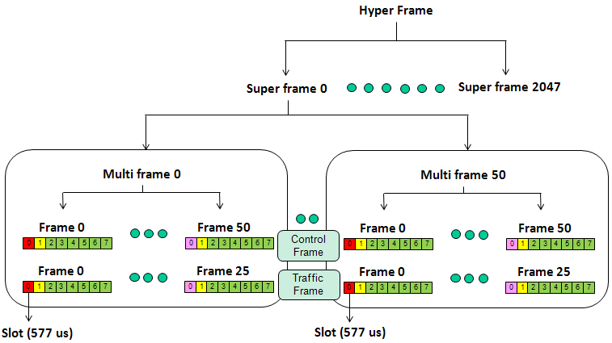
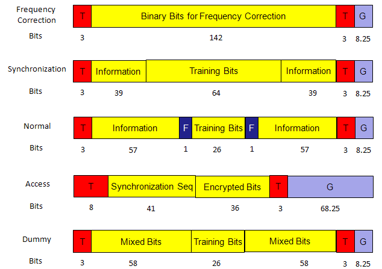
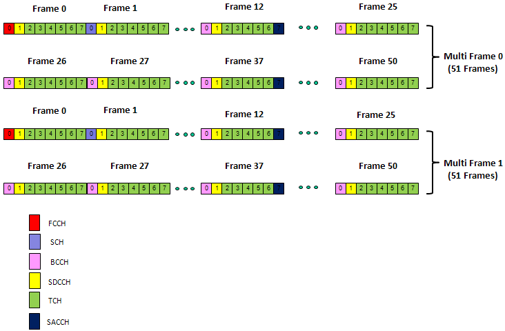
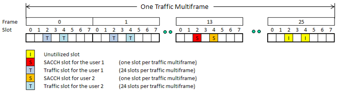
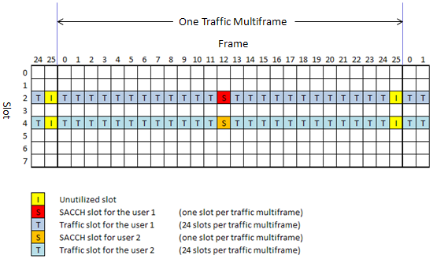
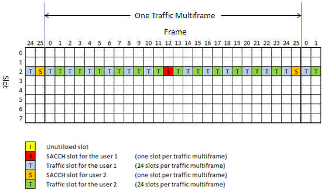
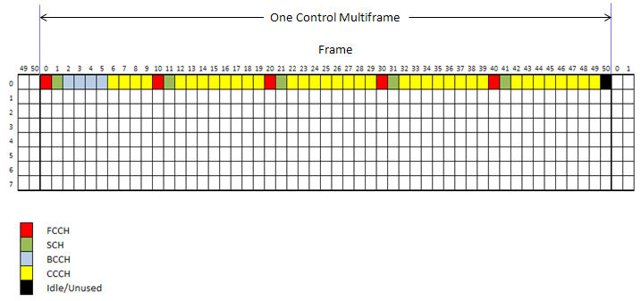
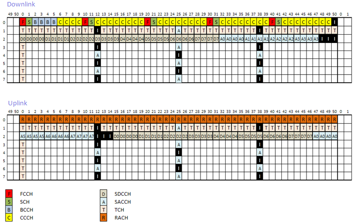

| Frame Structure - GSM |
|
When I am first trying to study GSM, I got so confused about the overal frame structure. One of the main reason for this confusion is that even a single cycle of a whole structure requires so many slots and frames, it is really hard to visualize the whole frame structure on a limited space of a sheet of paper or on a white board. I don't find any way to visualize the whole Hyper Frame structure showing the details at the level of every single slots, but overal GSM frame hierarchy is as follows. You would have seen this kind of diagram from various sources.
You have to understand at least the structure of slot, frame, multiframe structure in very detail.

Followings are a couple of video tutorial that I found from YouTube which would greatly help you understand overall GSM frame and channel structure. I strongly recommend you to go through these tutorials at least once and then this page can be a good cheat sheet to remind your memory and solidify your understanding.
Structure of Each types of Burst
In almost every wireless communication, we use various kind of channel types. Each of those different channel tend to have its own physical (or transport layer) structure. In GSM as well, we have many different types of physical and logical channels and each of these channel types are using its own physical structure at the level of a slot (Burst). Followings are the types of Burst being used in GSM/GPRS.

Every GSM/GPRS physical channels are mapped to one of these burst types and the mapping is described below. Each of the physical channel is also mapped to higher layer channel types called Logical channels. These mappings are summarized in a table in Quick Reference page.
< Frequency Correction Burst >
< Synchronization Burst >
< Access Burst >
When a mobile station sends an RACH message and receives an AGCH reply, neither MS nor the BTS does have the timing-advance information. For that reason, the actual message is relatively short and have a long guard band (GB) in order to make sure that there will be no overlap with the next burst. The length of the guard band in the access burst (68.25 bits x 3.69 = 251.16 ms) is equivalent to 37.5 km propagation delay. The GSM allows a cell radius up to of 35 km. That is, an RACH message from an MS at a distance of up to 35 km from the base station can reach to the base station antenna without overlapping the next burst. The FACCH channel uses this burst during handover operation (when the timing advance of new cell is not yet known). Only one training sequence is defined for this burst.
< Normal Burst >
A few important features of the burst is stated below. o Maximum 57 x 2 = 114 bits of voice/data per burst o Flag bit is to indicate if the channel is carrying user traffic (Flag = 0) or control message bits (Flag = 1). That is the flag is 0 for TCH and 1 for others.
< Dummy Burst >
This is like normal burst but has no meaning of its payload bits.
There are two different kind of Multi-Frames in GSM. One is called 'Control Multiframe' and the other one is called 'Traffic Multi Frame'. (Do you remember where the multiframe is located in overall GSM frame structure ? Let's refresh our memory. Slot --> Frame --> MultiFrame (Control Multiframe, Traffic MultiFrame) --> Super Frame --> HyperFrame. Do this questions and answer by yourself whenever you have chance until your brain automatically pops up a frame structure diagram as soon as you see some key words related to GSM frame).
Following is one example showing a control multiframe. As I said, even a single multi frame has 51 x 8 slots, so it is very hard to visualize the full details on a page. You will see a better way to visualize this structure at later section, for now just try to get some 'sense(feeling)' of how a multiframe looks like. One thing worth noticing would be the first slot in each frame seems to be used as some control channel. In this diagram, the second slot in each frame is being used as a control channel but it is not always the case.

Slot Allocation in Communication
As I keep telling you, the overall GSM frame structure (one cycle) is so long in time domain and I haven't see any material showing even a single multiframe at the full details of each slot. I googled a lot and went through a lot of different material and then I came across a document named "GSM Phy Part-1.pdf" and with just a glimpse of a couple of diagram there, I exclaimed myself "This is it !!!!!!". All of sudden a clear pattern within a multiframe start showing up.
Followings are those couple of diagrams from GSM Phy Part-1.pdf and I redraw the diagram just for my practice. Don't just look at these diagrams if you are GSM beginner, draw grids on a paper or open up a Excel spreadsheet and color and label it on your own. Sometimes you would notice what we did in the kindergarden still works very well when you are at the age when you have your own kindergarden kids -:).
Most of the examples in this section is regenerated based on GSM Phy Part-1.pdf created by Monzur Kabir, Ph.D., P.Eng.





|